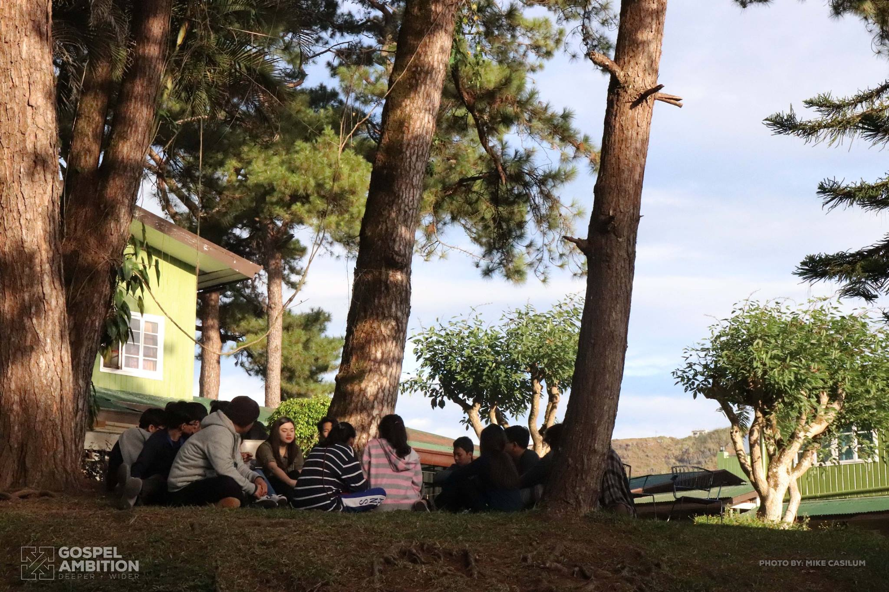
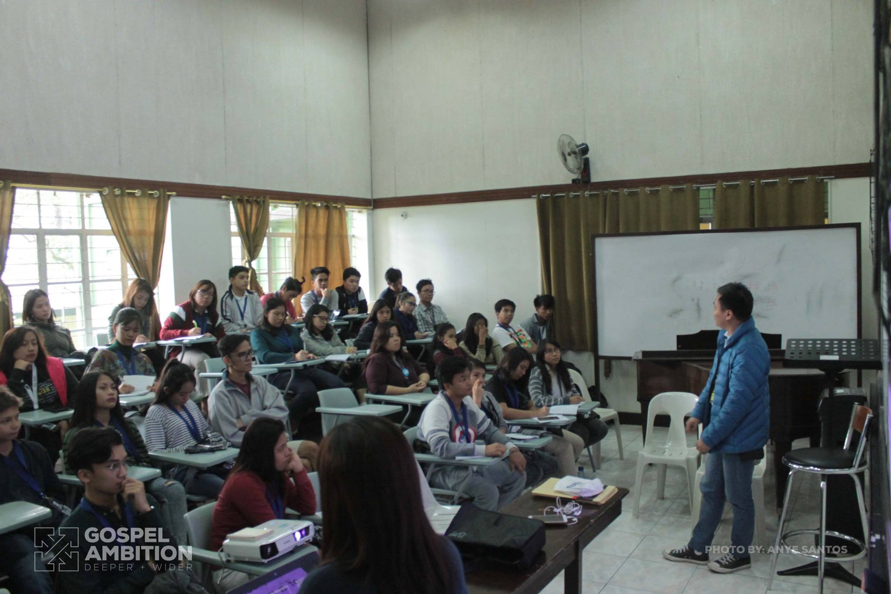
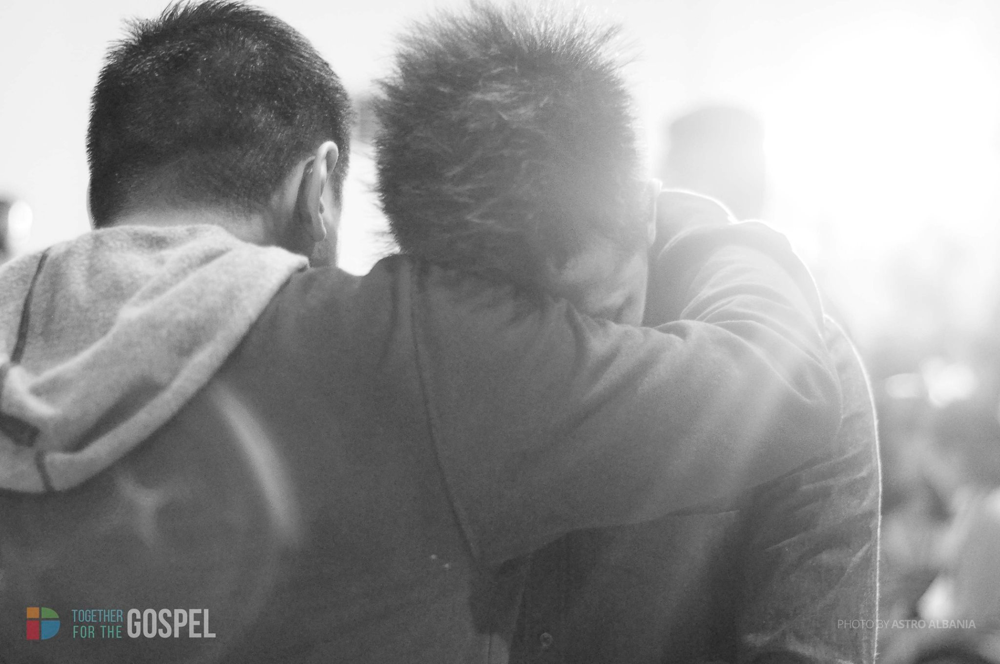

9 Reasons Why You Need to Go to APBY Conference 2019
May 2019 is getting closer and closer, and we’re all excited to go to the Asia Pacific Baptist Youth Conference happening in Baguio City, Philippines. Maybe you’ve been to an APBY Conference before, or maybe you haven’t. Allow us to give you 9 good reasons why you need to go.
1. For the greater glory of God!
If you are a youth leader or a youth minister/pastor in your church, you understand that it is God’s ministry to your local church, and not yours. Coming to APBYCon 2019 allows you to be filled, equipped, and refreshed to work for God’s glory. Expect to be motivated and pushed towards lifting up the name of Jesus in your ministry!
2. Worship the Lord among the nations!
It’s not every day that you get to experience worshiping with more than a thousand other youth leaders, pastors, and ministers from 23 different nations. This exciting mix of different cultures is sure to make for a wonderful atmosphere of singing and lifting up praises to the Lord!
3. Be strengthened from the Word.
Expect to dig deep into God’s Word, as we hear the call of the King to make disciples among the nations. We will need nothing less than the explosive power of the Gospel to give us strength in our daily ministries, and we’ve asked some wonderful men and women to open up and share God’s Word to us.

4. Listen to stories of how God is moving through the global Church.
Hear stories from other cultures of how the Lord is moving in Baptist churches surviving and thriving in the Asian region. Be moved to stand with and pray with other youth in their challenges, victories, sufferings, and as they place their hope in Christ alone.
5. Strategize for the future.
Be equipped in relevant workshops that are designed to give you tools to work with in your local church context. Enter into a space of learning and equipping, so that you can be encouraged to work better in the ministries entrusted to us.
6. Develop global partnerships.
As you interact with different churches from different nations, allow the Lord to open up opportunities of partnership for the completion of the Great Commission. The local church works in a specific context, but it can also reach out and be a blessing to other churches, cultures, and nations.
7. Make and strengthen bonds of friendship, old and new.
Reconnect with old friends from other countries, and definitely make new friendships as well. Coming together as Baptist youth in Asia allows us to have a certain bond that will give us lifetime friends to share victories with, as well as suffering. Allow Jesus to be the bond between us!

8. Experience the power of praying together.
As you hear and experience stories of life in different countries and cultures, take the opportunity to stand in the gap for churches suffering persecution and ask God to open windows and doors of opportunities to share the Gospel. Pray together with Baptist youth from other nations who have specific needs and challenges.
9. Hear from God.
The APBY Conference is a chance to step into a place of hearing what the Lord wants for your life. The Lord is sure to use his Word, his message through speakers and workshops, and even conversations with other Baptist youth to fill you with strength and guidance to do his will.
Come and join the APBY Conference 2019!
Be a part of God’s growing church in Asia. Allow God to use you to make disciples in your own local context, knowing that God is doing a great work in Asia. Join us in Baguio City in May 2019!
REGISTER NOW